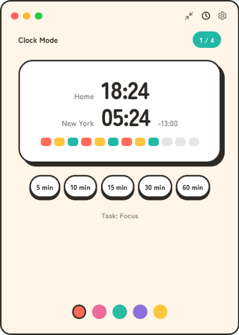

刻（kizami）
A tray-resident pomodoro timer with a candy-pop look. Focus, break, repeat — it lives in your tray and keeps ticking even with the window closed.



Download
macOS: kizami is not notarized by Apple, so the first launch is blocked. Allow it once via System Settings → Privacy & Security → Open Anyway. See the guide for details.
Package managers
Arch Linux (AUR)
yay -S kizami-bin
Features
🍅 Classic pomodoro cycle
Focus (25 min) → short break (5 min), four times, then a long break (15 min). Every duration and the number of sessions are configurable.
📌 Lives in your tray
Close the popup any time — the timer keeps running in the background, and desktop notifications tell you when a phase ends.
➖ Mini mode
Shrink the popup to a slim horizontal bar that stays out of the way: just the countdown and a start/stop button.
🕐 Clock mode & world clock
Turn the popup into a desk clock with a second city, scroll to shift both times for meeting planning, and start preset countdown timers right from the clock.
⏰ No drift
The engine is wall-clock based, so hiding the window or putting the machine to sleep never skews the timer.
🌏 Japanese / English
The UI follows your OS language automatically and can be switched in settings.
🎨 Candy-pop look
A warm, rounded design that is identical on Linux, macOS, and Windows.
All downloads are also available on the GitHub Releases page. 刻（kizami） works fully offline — no account, no telemetry.